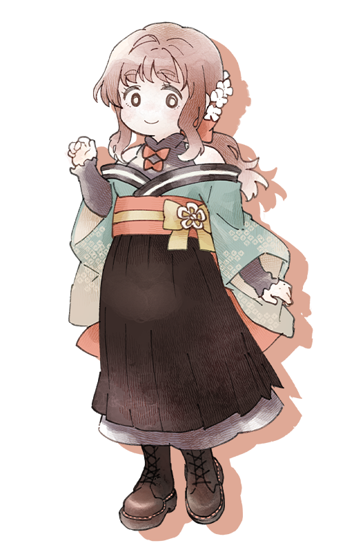

『神楽八十神追』PC4
「あ、おやつ食べる？ 元気でるよ～」
「”あなた”のために戦う、かごめです」
流派：鞍馬神流 階級：中忍 表の顔：高校生 信念：情
性別：女 年齢：18 身長：ちいさめ 誕生日：春
鞍馬育ちのにこやか元気な女子高生。
よく食べ、よく遊び、よく学び、よく眠る。三大欲求が全部でっかい。
春のひなたの光だけを浴びて育ったような性格。
素直で裏表がない。人を疑うこともあんまり知らない。
代々えらいお家の料理人をしている家系で、かごめも料理が得意。
何十人前をどーん！ みたいなやつ。
繊細なのとかおしゃれなのとかは……れんしゅうちゅう！
武器は薙刀。
趣味はお菓子作りとぬいぐるみ集め。
好き：いつきちゃん、ちとせくん、おいしいごはん、
苦手：じっとしていること（そわそわしちゃう！）
back